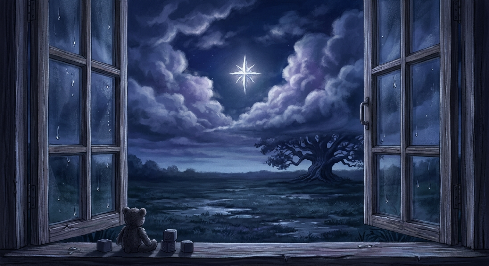

Pendant le reste de l'après-midi, ne parvint plus à lire. Ses yeux parcouraient les lignes de son livre, mais les mots glissaient devant elle sans laisser la moindre trace. Son esprit revenait sans cesse à la lettre. À cette étrange enveloppe. Au symbole gravé sur le sceau. Et surtout à ces quelques mots : Viens seule.
Elle relut la lettre une nouvelle fois. Puis encore une autre. Comme si les phrases allaient soudain révéler un détail qu'elle n'avait pas remarqué. Mais rien ne changea. Les mêmes mots demeuraient immobiles sur le papier. Mystérieux. Inquiétants. Impossible pourtant de les oublier.
Par moments, se disait qu'elle ne devrait pas y aller. Après tout, un inconnu lui avait donné rendez-vous en pleine nuit. C'était complètement absurde. Elle pourrait simplement déchirer la lettre. Ou la jeter dans la cheminée. Ou faire comme si rien ne s'était passé. Et pourtant... Une petite voix au fond d'elle lui soufflait que c'était impossible. Certaines questions refusent d'être ignorées. Elles s'accrochent à vous jusqu'à ce que vous découvriez la réponse.
Lentement, l'après-midi laissa place au soir. La pluie cessa. Le ciel se dégagea. Derrière la fenêtre, les nuages se déchirèrent peu à peu pour laisser apparaître les premières étoiles. Le jardin brillait encore des gouttes laissées par l'averse. Tout semblait paisible. Trop paisible.
Alors que la lumière disparaissait, regarda l'horloge. Puis la lettre. Puis l'horloge à nouveau. Son cœur battait un peu plus vite qu'à l'habitude. Elle savait déjà ce qu'elle allait faire. Depuis longtemps. Depuis le moment où elle avait lu les premiers mots de la lettre. Elle se leva. Attrapa son manteau. Et jeta un dernier regard à sa chambre. Une étrange impression lui traversa l'esprit. Comme si, lorsqu'elle reviendrait, quelque chose aurait changé. Quelque chose d'important.
Au-dehors, la première étoile venait tout juste d'apparaître.
